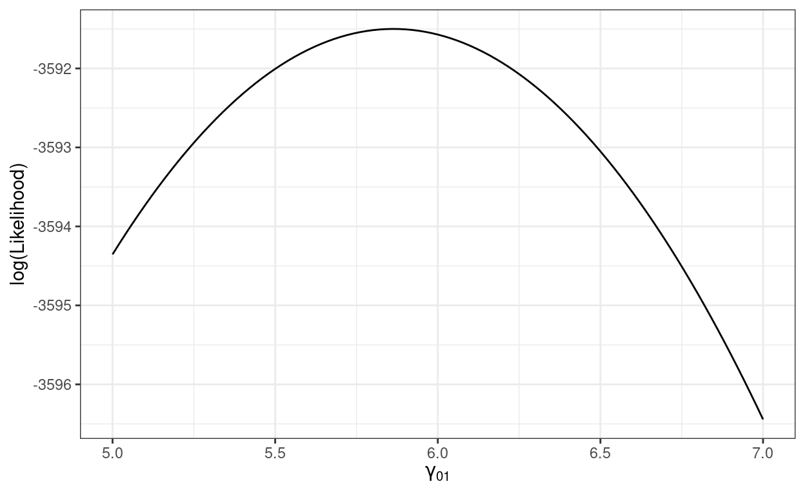
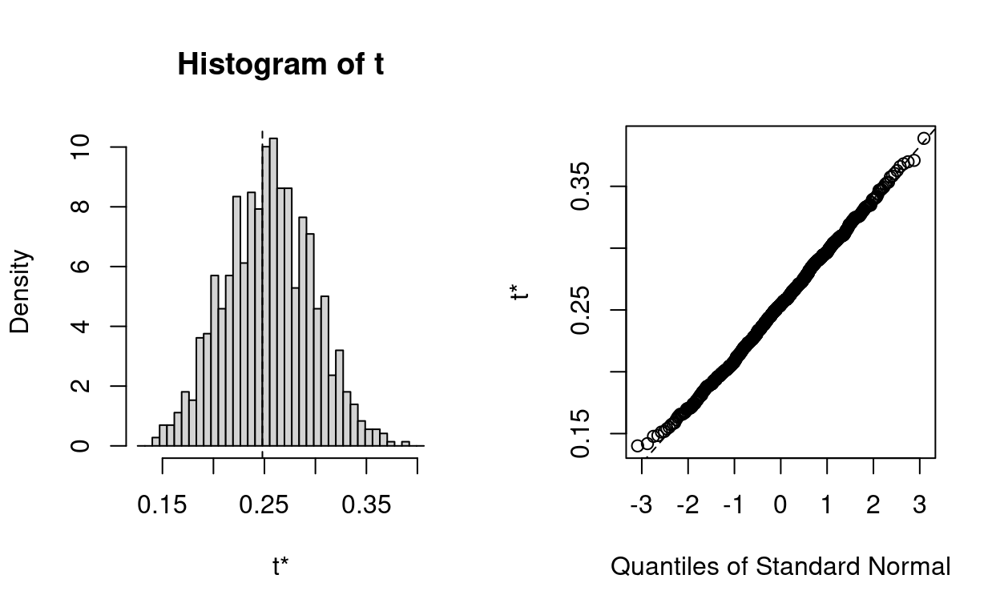

\[ \newcommand{\bv}[1]{\boldsymbol{\mathbf{#1}}} \]
Click here to download the Rmd file: week5-estimation-testing.Rmd
# To install a package, run the following ONCE (and only once on your computer)
# install.packages("psych")
library(here) # makes reading data more consistent
library(tidyverse) # for data manipulation and plotting
library(haven) # for importing SPSS/SAS/Stata data
library(lme4) # for multilevel analysis
library(MuMIn) # for computing r-squared
library(broom.mixed) # for summarizing results
library(modelsummary) # for making tables
theme_set(theme_bw()) # Theme; just my personal preference
In addition, because the table obtained from modelsummary::msummary() mixed up the ordering of the fixed- and the random-effect coefficients, I provided a quick fix to that by defining the msummary_mixed() function, which you need to load every time if you want to use it:
msummary_mixed <- function(models, output = "default", coef_map = NULL, ...) {
if (is.null(coef_map)) {
if (!"list" %in% class(models)) {
models <- list(models)
}
for (model in models) {
coef_map <- union(coef_map, tidy(model)$term)
}
ranef_index <- grep("^(sd|cor)__", x = coef_map)
coef_map <- c(coef_map[-ranef_index], coef_map[ranef_index])
names(coef_map) <- coef_map
} else {
ranef_index <- grep("^(sd|cor)__", x = names(coef_map))
}
rows <- data.frame(term = c("Fixed Effects", "Random Effects"))
rows <- cbind(rows, rbind(
rep("", length(models)),
rep("", length(models))
))
length_fes <- length(coef_map) - length(ranef_index)
if ("statistic" %in% names(list(...)) && is.null(list(...)$statistic)) {
attr(rows, "position") <- c(1, (length_fes + 1))
} else {
attr(rows, "position") <- c(1, (length_fes + 1) * 2)
}
if (output == "latex" || knitr::is_latex_output()) {
coef_map <- gsub("_", "-", coef_map)
}
modelsummary::msummary(models,
output = output, coef_map = coef_map,
add_rows = rows, ...
)
}
To demonstrate differences in smaller samples, we will use a subset of 16 schools
If you don’t feel comfortable with linear algebra and matrices, it is okay to skip this part, as it is more important to understand what the likelihood function is doing conceptually. If you are a stat/quant major or are interested in the math, then you may want to study the equation a little bit.
The mixed model can be written in matrix form. Let \(\bv y_j = [\bv y_1, \bv y_2, \ldots, \bv y_J]^\top\) be the column vector of length \(N\) for the outcome variable, \(\bv X\) be the \(N \times p\) predictor matrix (with the first column as the intercept), and \(\bv Z\) be the \(N \times Jq\) design matrix for the random effects with \(q\) being the number of random coefficients. To make things more concrete, if we have the model
\(\bv y\) is the outcome mathach
># [,1]
># [1,] 5.876
># [2,] 19.708
># [3,] 20.349
># [4,] 8.781
># [5,] 17.898
># [6,] 4.583\(\bv X\) is a \(N \times 3\) matrix, with the first column containing all 1s (for the intercept), the second column is meanses, and the third column is ses
># (Intercept) meanses ses
># 1 1 -0.428 -1.528
># 2 1 -0.428 -0.588
># 3 1 -0.428 -0.528
># 4 1 -0.428 -0.668
># 5 1 -0.428 -0.158
># 6 1 -0.428 0.022And \(\bv Z\) is a block-diagonal matrix \(\mathrm{diag}[\bv Z_1, \bv Z_2, \ldots, \bv Z_J]\), where each \(\bv Z_j\) is an \(n_j \times 2\) matrix with the first column containing all 1s and the second column containing the ses variable for cluster \(j\)
># [1] 7185 320# Show first two blocks
getME(m1, "Z")[1:72, 1:4]
># 72 x 4 sparse Matrix of class "dgCMatrix"
># 1224 1224 1288 1288
># 1 1 -1.528 . .
># 2 1 -0.588 . .
># 3 1 -0.528 . .
># 4 1 -0.668 . .
># 5 1 -0.158 . .
># 6 1 0.022 . .
># 7 1 -0.618 . .
># 8 1 -0.998 . .
># 9 1 -0.888 . .
># 10 1 -0.458 . .
># 11 1 -1.448 . .
># 12 1 -0.658 . .
># 13 1 -0.468 . .
># 14 1 -0.988 . .
># 15 1 0.332 . .
># 16 1 -0.678 . .
># 17 1 -0.298 . .
># 18 1 -1.528 . .
># 19 1 0.042 . .
># 20 1 -0.078 . .
># 21 1 0.062 . .
># 22 1 -0.128 . .
># 23 1 0.472 . .
># 24 1 -0.468 . .
># 25 1 -1.248 . .
># 26 1 -0.628 . .
># 27 1 0.832 . .
># 28 1 -0.568 . .
># 29 1 -0.258 . .
># 30 1 -0.138 . .
># 31 1 -0.478 . .
># 32 1 -0.948 . .
># 33 1 0.282 . .
># 34 1 -0.118 . .
># 35 1 -0.878 . .
># 36 1 -0.938 . .
># 37 1 -0.548 . .
># 38 1 0.142 . .
># 39 1 0.972 . .
># 40 1 0.372 . .
># 41 1 -1.658 . .
># 42 1 -1.068 . .
># 43 1 -0.248 . .
># 44 1 -1.398 . .
># 45 1 0.752 . .
># 46 1 0.012 . .
># 47 1 -0.418 . .
># 48 . . 1 -0.788
># 49 . . 1 -0.328
># 50 . . 1 0.472
># 51 . . 1 0.352
># 52 . . 1 -1.468
># 53 . . 1 0.202
># 54 . . 1 -0.518
># 55 . . 1 -0.158
># 56 . . 1 0.042
># 57 . . 1 0.682
># 58 . . 1 1.262
># 59 . . 1 0.152
># 60 . . 1 -0.678
># 61 . . 1 0.332
># 62 . . 1 -0.728
># 63 . . 1 1.262
># 64 . . 1 0.612
># 65 . . 1 0.692
># 66 . . 1 1.082
># 67 . . 1 0.222
># 68 . . 1 0.032
># 69 . . 1 -0.118
># 70 . . 1 -0.488
># 71 . . 1 0.322
># 72 . . 1 0.592The matrix form of the model is \[\bv y = \bv X \bv \gamma + \bv Z \bv u + \bv e,\] with \(\bv \gamma\) being a \(N \times p\) vector of fixed effects, \(\bv \tau\) a vector of random effect variances, \(\sigma\) the level-1 error term, \(\bv u\) containing the \(u_0\) and \(u_1\) values for all clusters (320 in total), and \(\bv e\) containing the level-1 errors. The distributional assumptions are \(\bv u_j \sim N_2(\bv 0, \bv G)\) and \(e_{ij} \sim N(0, \sigma)\).
The marginal distribution of \(\bv y\) is thus \[\bv y \sim N_p\left(\bv X \bv \gamma, \bv V(\bv \tau, \sigma)\right),\] where \(\bv V(\bv \tau, \sigma) = \bv Z \bv G \bv Z^\top + \sigma^2 \bv I\) with \(\bv I\) being an \(N \times N\) identity matrix.
The log-likelihood function for a multilevel model is \[\ell(\bv \gamma, \bv \tau, \sigma; \bv y) = - \frac{1}{2} \left\{\log | \bv V(\bv \tau, \sigma)| + (\bv y - \bv X \bv \gamma)^\top \bv V^{-1}(\bv \tau, \sigma) (\bv y - \bv X \bv \gamma) \right\} + K\] with \(K\) not involving the model parameters. Check out this paper if you want to learn more about the log likelihood function used in lme4.
Note: When statistician says log it means the natural logarithm, i.e., log with base e (sometimes written as ln)
We’ll use the model with meanses as the predictor on the full data set (hsball), and use R to write the log-likelihood function for \(\gamma_{01}\)
# Extract V from the model
V_m_lv2 <- (crossprod(getME(m_lv2, "A")) + Matrix::Diagonal(7185)) *
sigma(m_lv2)^2
# Log-likelihood function with respect to gamma01
llfun <- function(gamma01,
gamma00 = fixef(m_lv2)[1],
y = m_lv2@resp$y,
X = cbind(1, m_lv2@frame$meanses),
V = V_m_lv2) {
gamma <- c(gamma00, gamma01)
y_minus_Xgamma <- y - X %*% gamma
as.numeric(
- crossprod(y_minus_Xgamma, solve(V, y_minus_Xgamma)) / 2
)
}
# Vectorize
llfun <- Vectorize(llfun)
# Plot
ggplot(tibble(gamma01 = c(5, 7)), aes(x = gamma01)) +
stat_function(fun = llfun) +
labs(x = expression(gamma[0][1]), y = "log(Likelihood)")

We’ll use the cross-level interaction model on the subset
# Cluster-mean centering
hsbsub <- hsbsub %>%
group_by(id) %>% # operate within schools
mutate(ses_cm = mean(ses), # create cluster means (the same as `meanses`)
ses_cmc = ses - ses_cm) %>% # cluster-mean centered
ungroup() # exit the "editing within groups" mode
# Default is REML
crlv_int <- lmer(mathach ~ meanses + sector * ses_cmc + (ses_cmc | id),
data = hsbsub)
# Use REML = FALSE for ML
crlv_int_ml <- lmer(mathach ~ meanses + sector * ses_cmc + (ses_cmc | id),
data = hsbsub, REML = FALSE)
# Alternatively, you can use refitML()
# refitML(crlv_int_ml)
# Compare the models
msummary_mixed(list("REML" = crlv_int,
"ML" = crlv_int_ml))
| REML | ML | |
|---|---|---|
| Fixed Effects | ||
| (Intercept) | 11.728 | 11.728 |
| (0.670) | (0.605) | |
| meanses | 6.633 | 6.492 |
| (1.139) | (1.035) | |
| sector | 1.890 | 1.901 |
| (0.903) | (0.815) | |
| ses_cmc | 2.860 | 2.862 |
| (0.464) | (0.459) | |
| sector:ses_cmc | −0.885 | −0.888 |
| (0.661) | (0.655) | |
| Random Effects | ||
| sd__(Intercept) | 1.520 | 1.317 |
| cor__(Intercept).ses_cmc | 1.000 | 1.000 |
| sd__ses_cmc | 0.354 | 0.311 |
| sd__Observation | 5.698 | 5.689 |
| AIC | 4365.1 | 4369.2 |
| BIC | 4405.9 | 4410.0 |
| Log.Lik. | −2173.563 | −2175.612 |
| REMLcrit | 4347.125 |
Notice that the standard errors are generally larger for REML than for ML, and it’s generally more accurate with REML in small samples. Also the \(\tau^2\) estimates (i.e., labelled sd__(Intercept) for \(\tau^2_0\) and sd__ses_cmc for \(\tau^2_1\)) are larger (and more accurately estimated) for REML.
To see more details on how lme4 iteratively tries to arrive at the REML/ML estimates, try
crlv_int2 <- lmer(mathach ~ meanses + sector * ses_cmc + (ses_cmc | id),
data = hsbsub, verbose = 1)
># iteration: 1
># f(x) = 4396.943300
># iteration: 2
># f(x) = 4410.471845
># iteration: 3
># f(x) = 4398.478905
># iteration: 4
># f(x) = 4411.654851
># iteration: 5
># f(x) = 4377.931282
># iteration: 6
># f(x) = 4399.307646
># iteration: 7
># f(x) = 4371.367019
># iteration: 8
># f(x) = 4347.537222
># iteration: 9
># f(x) = 4367.879802
># iteration: 10
># f(x) = 4350.984197
># iteration: 11
># f(x) = 4351.658449
># iteration: 12
># f(x) = 4349.986861
># iteration: 13
># f(x) = 4347.709342
># iteration: 14
># f(x) = 4347.884914
># iteration: 15
># f(x) = 4347.701287
># iteration: 16
># f(x) = 4347.194148
># iteration: 17
># f(x) = 4347.172072
># iteration: 18
># f(x) = 4347.140652
># iteration: 19
># f(x) = 4347.137326
># iteration: 20
># f(x) = 4347.127020
># iteration: 21
># f(x) = 4347.128477
># iteration: 22
># f(x) = 4347.143600
># iteration: 23
># f(x) = 4347.125497
># iteration: 24
># f(x) = 4347.125875
># iteration: 25
># f(x) = 4347.125844
># iteration: 26
># f(x) = 4347.125305
># iteration: 27
># f(x) = 4347.125138
># iteration: 28
># f(x) = 4347.125098
># iteration: 29
># f(x) = 4347.125226
># iteration: 30
># f(x) = 4347.125068
># iteration: 31
># f(x) = 4347.125119
># iteration: 32
># f(x) = 4347.125062
># iteration: 33
># f(x) = 4347.125065
># iteration: 34
># f(x) = 4347.125063
># iteration: 35
># f(x) = 4347.125066
># iteration: 36
># f(x) = 4347.125059
># iteration: 37
># f(x) = 4347.125056
># iteration: 38
># f(x) = 4347.125056The numbers shown above are the deviance, that is, -2 \(\times\) log-likelihood. Because probabilities (as well as likelihood) are less than or equal to 1, the log will be less than or equal to 0, meaning that the log likelihood values are generally negative. Multiplying it by -2 results in positive deviance that is a bit easier to work with (and the factor 2 is related to converting a normal distribution to a \(\chi^2\) distribution).
To test the null that a predictor has a non-zero coefficient given other predictors in the model, an easy way is to use the likelihood-based 95% CI (also called the profile-likelihood CI, as discussed in your text):
# Use parm = "beta_" for only fixed effects
confint(crlv_int, parm = "beta_")
># 2.5 % 97.5 %
># (Intercept) 10.4692542 12.9863640
># meanses 4.0885277 8.9516323
># sector 0.1915185 3.5912387
># ses_cmc 1.9257690 3.7740789
># sector:ses_cmc -2.1748867 0.4629693If 0 is not in the 95% CI, the null is rejected at .05 significance level. This is basically equivalent to the likelihood ratio test, which can be obtained by comparing the model without one of the coefficients (e.g., the cross-level interaction):
model_no_crlv <- lmer(mathach ~ meanses + sector + ses_cmc + (ses_cmc | id),
data = hsbsub)
# Note: lme4 will refit the model to use ML when performing LRT
anova(crlv_int, model_no_crlv)
># Data: hsbsub
># Models:
># model_no_crlv: mathach ~ meanses + sector + ses_cmc + (ses_cmc | id)
># crlv_int: mathach ~ meanses + sector * ses_cmc + (ses_cmc | id)
># npar AIC BIC logLik deviance Chisq Df
># model_no_crlv 8 4369.0 4405.2 -2176.5 4353.0
># crlv_int 9 4369.2 4410.0 -2175.6 4351.2 1.7377 1
># Pr(>Chisq)
># model_no_crlv
># crlv_int 0.1874Or with the drop1() function and adding the formula:
# Note: lme4 will refit the model to use ML when performing LRT for fixed
# effects
drop1(crlv_int, ~ meanses + sector * ses_cmc, test = "Chisq")
># Single term deletions
>#
># Model:
># mathach ~ meanses + sector * ses_cmc + (ses_cmc | id)
># npar AIC LRT Pr(Chi)
># <none> 4369.2
># meanses 1 4384.8 17.6087 2.713e-05 ***
># sector 1 4371.8 4.5846 0.03226 *
># ses_cmc 1 4387.1 19.8347 8.444e-06 ***
># sector:ses_cmc 1 4369.0 1.7377 0.18743
># ---
># Signif. codes: 0 '***' 0.001 '**' 0.01 '*' 0.05 '.' 0.1 ' ' 1In small sample situation (with < 50 clusters), the Kenward-Roger (KR) approximation of degrees of freedom will give more accurate tests. To do this in R, you should load the lmerTest package before running the model. Since I’ve already run the model, I will load the package and convert the results using the as_lmerModLmerTest() function:
library(lmerTest)
crlv_int_test <- as_lmerModLmerTest(crlv_int)
# Try anova()
anova(crlv_int_test, ddf = "Kenward-Roger")
># Type III Analysis of Variance Table with Kenward-Roger's method
># Sum Sq Mean Sq NumDF DenDF F value Pr(>F)
># meanses 959.83 959.83 1 13.0241 29.5678 0.0001129 ***
># sector 141.61 141.61 1 13.2258 4.3624 0.0566181 .
># ses_cmc 1150.22 1150.22 1 8.6559 35.4328 0.0002505 ***
># sector:ses_cmc 55.15 55.15 1 11.7341 1.6990 0.2174123
># ---
># Signif. codes: 0 '***' 0.001 '**' 0.01 '*' 0.05 '.' 0.1 ' ' 1# Summary will print t test results
summary(crlv_int_test, ddf = "Kenward-Roger")
># Linear mixed model fit by REML. t-tests use Kenward-Roger's method [
># lmerModLmerTest]
># Formula: mathach ~ meanses + sector * ses_cmc + (ses_cmc | id)
># Data: hsbsub
>#
># REML criterion at convergence: 4347.1
>#
># Scaled residuals:
># Min 1Q Median 3Q Max
># -3.11430 -0.75641 0.02989 0.72275 2.25163
>#
># Random effects:
># Groups Name Variance Std.Dev. Corr
># id (Intercept) 2.3097 1.5198
># ses_cmc 0.1255 0.3542 1.00
># Residual 32.4620 5.6975
># Number of obs: 686, groups: id, 16
>#
># Fixed effects:
># Estimate Std. Error df t value Pr(>|t|)
># (Intercept) 11.7282 0.6704 13.2107 17.493 1.6e-10 ***
># meanses 6.6327 1.2198 13.0241 5.438 0.000113 ***
># sector 1.8900 0.9049 13.2258 2.089 0.056618 .
># ses_cmc 2.8601 0.4805 8.6559 5.953 0.000250 ***
># sector:ses_cmc -0.8848 0.6788 11.7341 -1.303 0.217412
># ---
># Signif. codes: 0 '***' 0.001 '**' 0.01 '*' 0.05 '.' 0.1 ' ' 1
>#
># Correlation of Fixed Effects:
># (Intr) meanss sector ss_cmc
># meanses -0.021
># sector -0.738 -0.176
># ses_cmc 0.253 -0.020 -0.184
># sctr:ss_cmc -0.178 0.007 0.232 -0.701
># optimizer (nloptwrap) convergence code: 0 (OK)
># boundary (singular) fit: see ?isSingular# Table (need to specify the `ddf` argument)
msummary_mixed(list(REML = crlv_int, `REML-KR` = crlv_int_test),
ddf = "Kenward-Roger")
| REML | REML-KR | |
|---|---|---|
| Fixed Effects | ||
| (Intercept) | 11.728 | 11.728 |
| (0.670) | (0.670) | |
| meanses | 6.633 | 6.633 |
| (1.139) | (1.220) | |
| sector | 1.890 | 1.890 |
| (0.903) | (0.905) | |
| ses_cmc | 2.860 | 2.860 |
| (0.464) | (0.480) | |
| sector:ses_cmc | −0.885 | −0.885 |
| (0.661) | (0.679) | |
| Random Effects | ||
| sd__(Intercept) | 1.520 | 1.520 |
| cor__(Intercept).ses_cmc | 1.000 | 1.000 |
| sd__ses_cmc | 0.354 | 0.354 |
| sd__Observation | 5.698 | 5.698 |
| AIC | 4365.1 | 4365.1 |
| BIC | 4405.9 | 4405.9 |
| Log.Lik. | −2173.563 | −2173.563 |
| REMLcrit | 4347.125 | 4347.125 |
You can see now sector was actually not significant (although it’s part of an interaction so the test of the conditional effect may not be very meaningful). Note KR requires using REML.
If you’re interested in knowing more, KR is based on an \(F\) test, as opposed to a \(\chi^2\) test for LRT. When the denominator degrees of freedom for \(F\) is large, which happens in large sample (with many clusters), the \(F\) distribution converges to a \(\chi^2\) distribution, so there is no need to know exactly the degrees of freedom. However, in small samples, these two look different, and to get more accurate \(p\) values one needs to have a good estimate of the denominator degrees of freedom, but it’s not straightforward with MLM, especially with unbalanced data (i.e., clusters having different sizes). There are several methods to approximate the degrees of freedom, but KR has generally been found to perform the best.
To test the null hypothesis that the random slope variance, \(\tau^2_1\), is zero, one can again rely on the LRT. However, because \(\tau^2_1\) is non-negative (i.e., zero or positive), using the regular LRT will lead to a overly conservative test, meaning that power is too small. Technically, as pointed out in your text, under the null the sampling distribution of the LRT will follow approximately a mixture \(\chi^2\) distribution. There are several ways to improve the test, but as shown in LaHuis and Ferguson (2009, https://doi.org/10.1177/1094428107308984), a simple way is to divide the \(p\) value you obtain from software by 2 so that it resembles a one-tailed test.
ran_slp <- lmer(mathach ~ meanses + ses_cmc + (ses_cmc | id), data = hsbsub)
# Compare to the model without random slopes
m_bw <- lmer(mathach ~ meanses + ses_cmc + (1 | id), data = hsbsub)
# Compute the difference in deviance (4356.769 - 4356.754)
REMLcrit(m_bw) - REMLcrit(ran_slp)
># [1] 0.01432169# Find the p value from a chi-squared distribution
pchisq(REMLcrit(m_bw) - REMLcrit(ran_slp), df = 2, lower.tail = FALSE)
># [1] 0.9928647# Need to divide the p by 2 for a one-tailed test
So the \(p\) value in our example for testing the random slope variance was 0.5, which suggested that for the subsample, there was insufficient evidence that the slope between ses_cmc and mathach varied across schools.
You can also use ranova() to get the same results (again, the \(p\) values need to be divded by 2)
ranova(ran_slp)
># ANOVA-like table for random-effects: Single term deletions
>#
># Model:
># mathach ~ meanses + ses_cmc + (ses_cmc | id)
># npar logLik AIC LRT Df Pr(>Chisq)
># <none> 7 -2178.4 4370.8
># ses_cmc in (ses_cmc | id) 5 -2178.4 4366.8 0.014322 2 0.9929The bootstrap is a simulation-based method to approximate the sampling distribution of parameter estimates. Indeed, you’ve already seen a version of it in previous weeks when we talk about simulation. In the previous weeks, we generated data assuming that the sample model perfectly described the population, which notably includes the normality assumption. That simulation method is also called parametric bootstrap. Here we’ll use another version of the bootstrap, called the residual bootstrap, which does not assume that the normality assumptions hold for the population. You can check out Lai (2021).
To perform the bootstrap, you’ll need to supply functions that extract different parameter estimates or other quantities (e.g., effect sizes) from a fitted model. Below are some examples:
Note: Because running the bootstrap takes a long time, you can include the chunk option
chache=TRUEso that when knitting the file, it will not rerun the chunk unless the content of it has been changed.
# This takes a few minutes to run
boot_crlv_int <- bootstrap_mer(
crlv_int, # model
# function for extracting information from model (fixef = fixed effect)
fixef,
nsim = 999, # number of bootstrap samples
type = "residual" # residual bootstrap
)
# Bootstrap CI for cross-level interaction (index = 5 for 5th coefficient)
# Note: type = "perc" extracts the percentile CI, which is one of the several
# possible CI options with the bootstrap
boot.ci(boot_crlv_int, index = 5, type = "perc")
># BOOTSTRAP CONFIDENCE INTERVAL CALCULATIONS
># Based on 999 bootstrap replicates
>#
># CALL :
># boot.ci(boot.out = boot_crlv_int, type = "perc", index = 5)
>#
># Intervals :
># Level Percentile
># 95% (-2.1774, 0.4343 )
># Calculations and Intervals on Original ScaleExtracting variance components from lmer() results requires a little bit more efforts.
# Define function to extract variance components
get_vc <- function(object) {
vc_df <- data.frame(VarCorr(object))
vc_df[ , "vcov"]
}
# Verfiy that the function extracts the right quantities
get_vc(ran_slp)
># [1] 3.04994425 0.04159963 0.08850399 32.55971461# This again takes a few minutes to run
boot_ran_slp <- bootstrap_mer(
ran_slp, # model
# function for extracting information from model (fixef = fixed effect)
get_vc,
nsim = 999, # number of bootstrap samples
type = "residual" # residual bootstrap
)
# Bootstrap CI for random slope variance (index = 2)
boot.ci(boot_ran_slp, index = 2, type = "perc")
># BOOTSTRAP CONFIDENCE INTERVAL CALCULATIONS
># Based on 999 bootstrap replicates
>#
># CALL :
># boot.ci(boot.out = boot_ran_slp, type = "perc", index = 2)
>#
># Intervals :
># Level Percentile
># 95% ( 0.0004, 1.3443 )
># Calculations and Intervals on Original Scale# This again takes a few minutes
boot_r2 <- bootstrap_mer(crlv_int, MuMIn::r.squaredGLMM, nsim = 999,
type = "residual")
boot.ci(boot_r2, index = 1, type = "perc") # index = 1 for marginal R2
># BOOTSTRAP CONFIDENCE INTERVAL CALCULATIONS
># Based on 999 bootstrap replicates
>#
># CALL :
># boot.ci(boot.out = boot_r2, type = "perc", index = 1)
>#
># Intervals :
># Level Percentile
># 95% ( 0.1705, 0.3370 )
># Calculations and Intervals on Original ScaleYou can check the bootstrap sampling distribution using
plot(boot_r2, index = 1)
